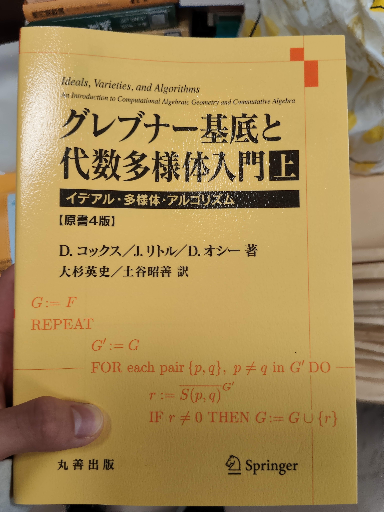
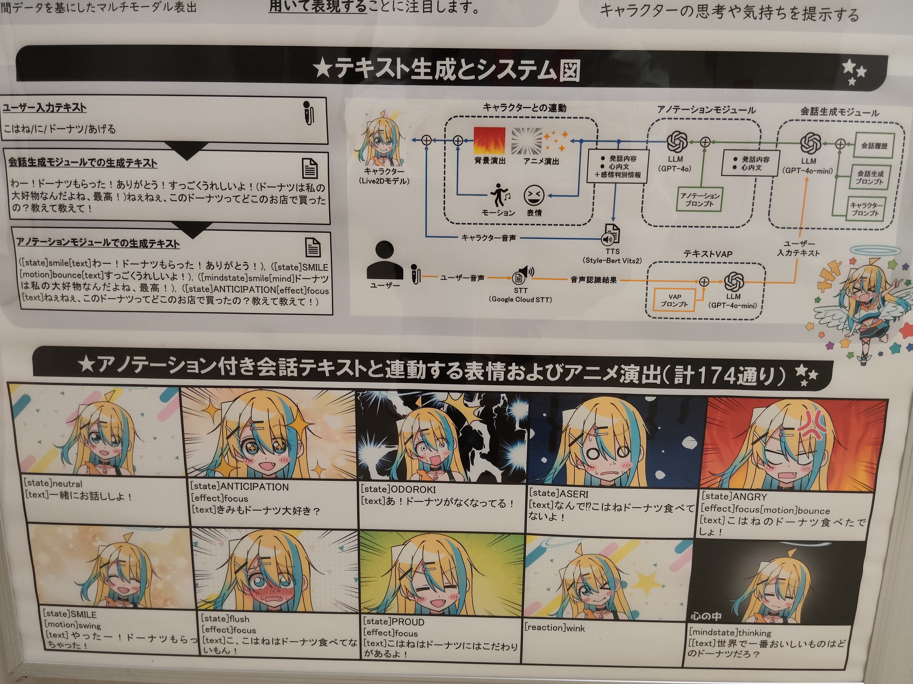
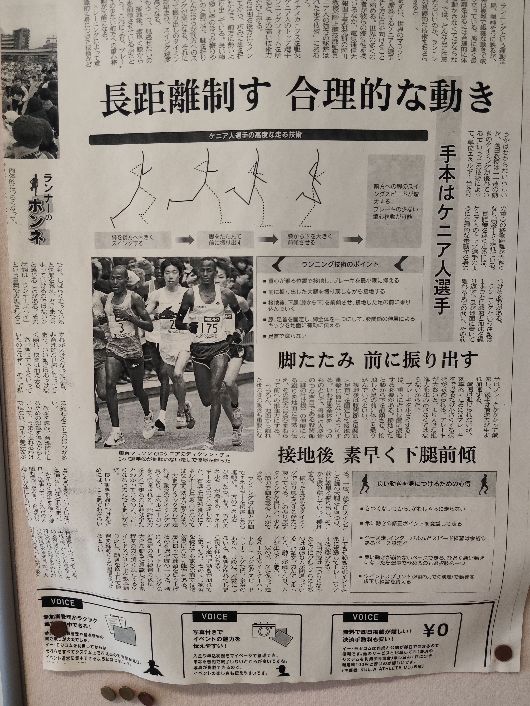
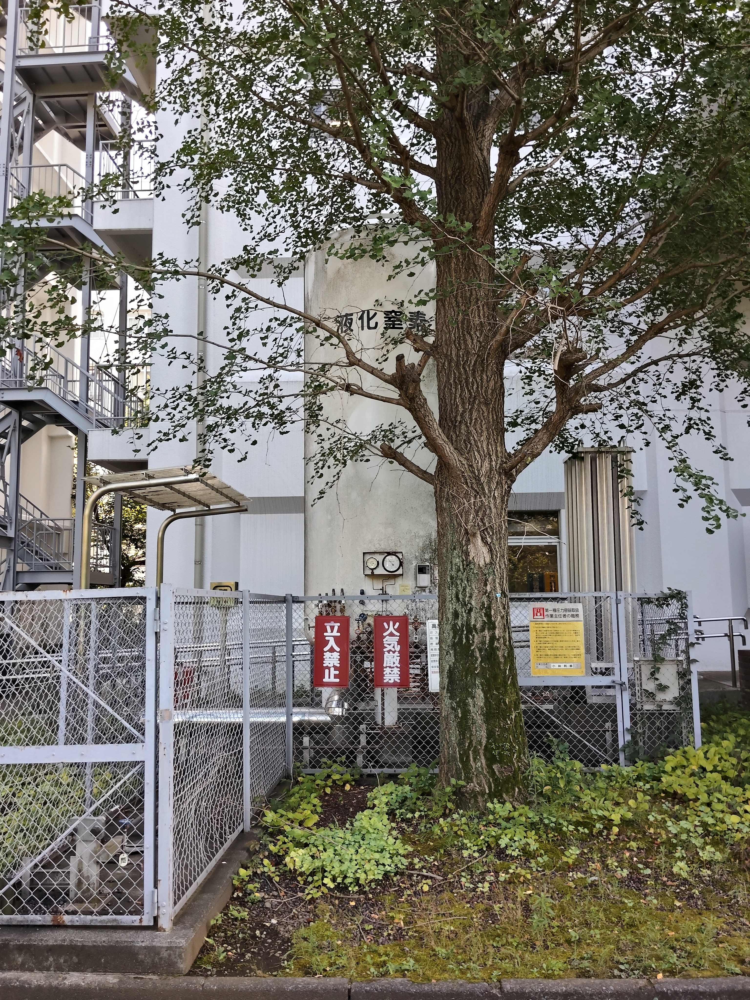

電気通信大学の
オープンキャンパスに行ってきました。

最初は電気通信大学に入ってすぐのところにある棟に入ってみました。
一回には液体ヘリウムの実験をしている場所がありました。
(あんまり興味なかったから割愛....許せッ)
2階3階へと上がっていくと
｛オープンキャンパスで御用のある方はノックしてください｝
と書かれた扉を見つけました。
教授の部屋に入る経験がなかったので 入っていいものなのか相当迷いましたが
結局侵入してみることにしたら、快く受け入れてもらえました。
良かったε-(´∀｀*)ﾎｯ
結構話し込んでしまい(2時間くらい？)
他にも回りたいところがあったため退散させていただきました。
いろんなこと教えてもらって楽しかったぁ
たくさんの展示があった中で私が一番斬新だと思ったことが
コンピューターなどのテクノロジーを使った芸術作品を作る学部があるということです。

この人はチャットGPTと漫画の表情表現をつかって人間と受け答えのできるAIを作っていました。
大学でやりたいことがなくても最悪こういうことに逃げることができる
ということを発見できました。
これで安心だな( -`ω-)ｷﾘｯ

これに書いてあること実践してみたんですけど
どんなに工夫した走り方でも1km走るくらいじゃあんまり効果は体感できませんでした。

どこにでもある液体窒素にほっこり(*´꒳`*)